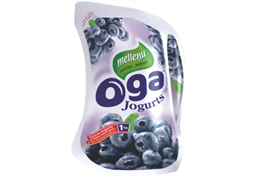
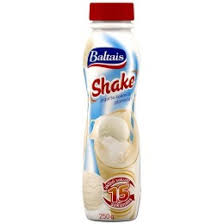
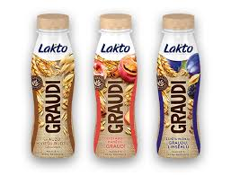
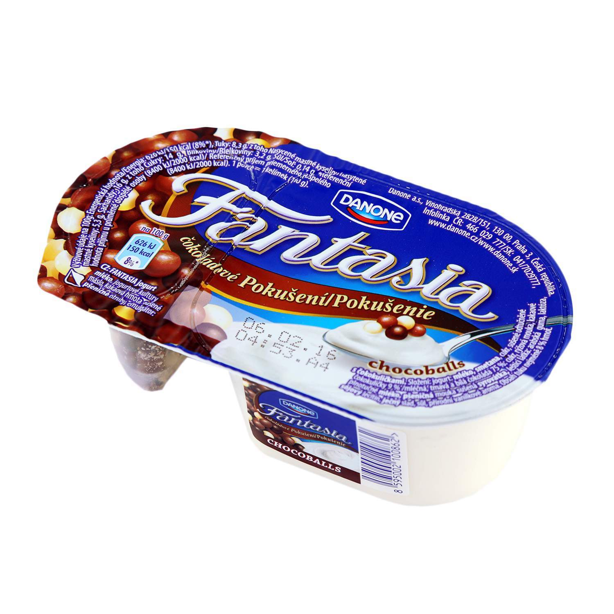
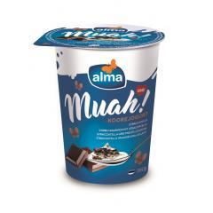
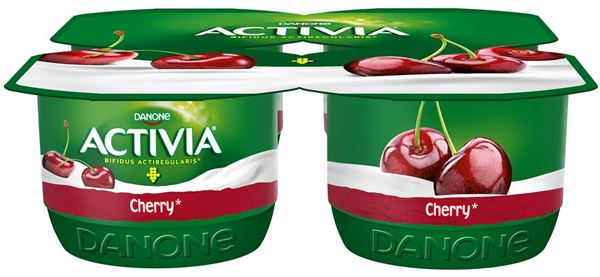
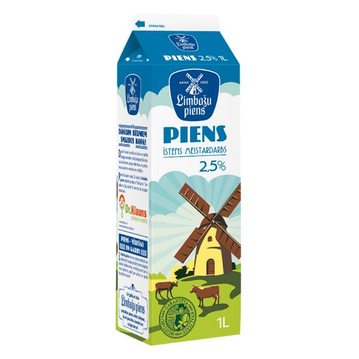

Manas domas par visādiem jogurtiem
(Termins "jogurts" šoreiz tiek atstāts katra interpretācijai (tai skaitā - manai))
Oga

Klasika. Vienmēr, kad uzrodas vēlme pēc jogurta, šī ir pirmā izvēle. Kāpēc? Jo tas ir lēts un liels. Sākumā nav nekādu problēmu izdzert glāzīti ar šo jogurtu, tomēr pēc tam tas tiek ielikts ledusskapī uz aizmiršanu. Bet, ja beigu galā pašapziņa neļauj labam jogurtam sapūt leduskapī un tiek nolemts to izdzert, trešais malks jau sāk palikt šķebinošs.
Shake

Ideāls variants fitnesa cienītājiem, jo pirms dzeršanas šis dzēriens ir aktīvi jāsakrata 15 sekundes.
Lakto jogurts ar graudiem

Kaut kas oriģināls. Kaut kas jauns. Neformīgie kunkuļi bija nevēlams pārsteigums.
Fantasia
Ak, mana mazotnes laime. Kādreiz bija tāds prieks lūgt mammai samaksāt nesamērīgi daudz par nesamērīga tilpuma trauciņu tikai tāpēc, lai varētu pakraukšķināt mazās šokolādes bumbiņas. Ja būtu atstājuši to manā ziņā, uz mājām no veikala līdzi nāktu tikai šokolādes bumbiņu glabātuve. Nopirkt pliku šokolādi, kas būtu bijis daudz saudzīgāk mammas maciņam, man neienāca prātā.
Muah!

Ideāla apmēra porcija. Garšīgs. Un nav pat pārcenots. Kaut gan šī ir pirmā reize, kad ievēroju šī jogurta nosaukumu un tas tikai tāpēc, jo vajadzēja to uzrakstīt. Citādāk būtu varējis palikt anonīms.
Activia
Godīgi sakot, šis jogurts nav bijis manas ievērības cienīgs, bet es sajutos vainīga to neiekļaujot. Laikam tas tāpēc, jo tā ir vienīgā televīzijas reklāma, kuru atceros.
Dzeramais grieķu jogurts

Noderīgākais jogurts uz pasaules. Tas nav nekas smalks, tomēr tas pilda savu funkciju un dabūs jūs cauri grūtiem laikiem. Ļoti rekomendēju.
Limbažu piens

Tas vispār nav jogurts.